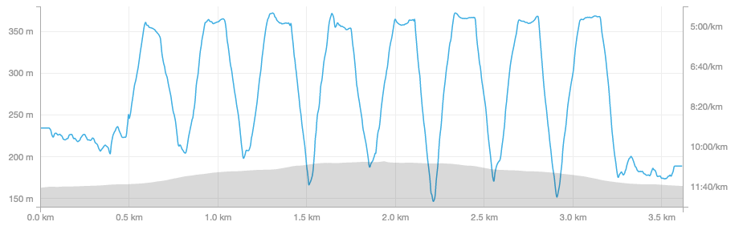

Emily Horsman’s running progress in the Couch-to-5K running plan.
I’m currently using Strava on a Nexus 5 to log my runs.
Week 3 Day 3

- 2x 90 second run/90 second walk/3 minute run/3 minute walk
- This went much better, felt way easier. Still a challenge though.
Week 3 Day 2
- 2x 90 second run/90 second walk/3 minute run/3 minute walk
- Still fairly difficult
Week 3 Day 1

- 2x 90 second run/90 second walk/3 minute run/3 minute walk
- Went at 12:30PM
- Fairly difficult, just barely made the three minute springs
- Was feeling sorta shakey before going
- Temperature: 18°C
- Humidity: 92%
Week 2 Day 3

- 6x 90 second run/90 second walk
- Went at 2PM
- Average pace: 7:43/km
- Not too difficult
- Hadn’t eaten much before
- Temperature: 16°C
- Humidity: 79%
Week 2 Bonus Run

- Average pace: 7:54/km
Week 2 Day 2

- 6x 90 second run/90 second walk
- Went around noon
- Average pace: 7:33/km
- Not too difficult, about the same as last time
- Hadn’t eaten much before
- Rained on
- Temperature: 17°C
- Humidity: 71%
Week 2 Day 1

- 6x 90 second run/90 second walk
- Went in the afternoon
- Average pace: 7:10/km
- Not too difficult
- Temperature: 22°C
- Humidity: 68%
Week 1 Day 3

- 8x 60 second run/90 second walk
- Went earlier than usual
- Average pace: 7:58/km
- Not quite as easy as W1D3 but not particularly difficult
- Ate within energy deficit on day before
- Temperature: 16°C
- Humidity: 70%
Week 1 Day 2

- 8x 60 second run/90 second walk
- Average pace: 7:49/km
- I was actually hoping the average pace would be slower not faster. I want to keep a low pace right now and focus on endurance
- This run was much easier than W1D1
- Was far more caffeinated than W1D1
- Ate around energy balance on day before
- Temperature: 14°C
- Humidity: 68%
Week 1 Day 1

- 8x 60 second run/90 second walk
- Average pace: 7:55/km
- Very challenging, hardly finished each interval
- Ate within energy deficit on day before
- Temperature: 26°C
- Humidity: 73%